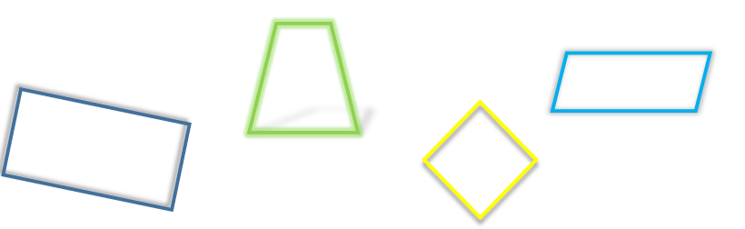
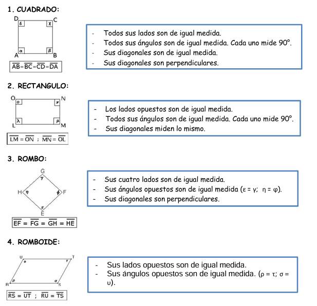
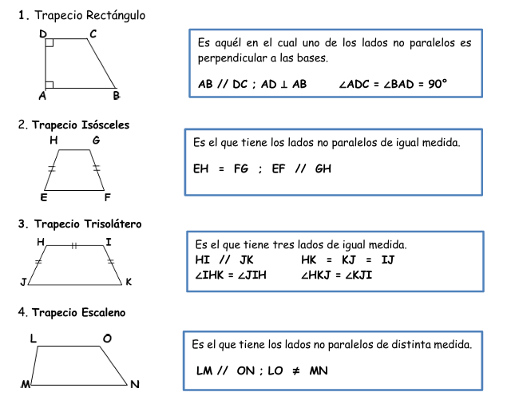
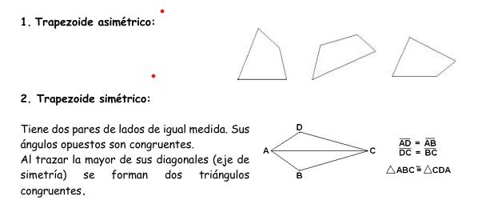

Geometria
Cuadriláteros
Cuadriláteros
Concepto
Los cuadriláteros son polígonos formados por cuatro lados y cuatro ángulos.
Los podemos clasificar teniendo en cuenta la longitud de sus lados y la amplitud de sus ángulos.

Clasificación de cuadriláteros
Los cuadriláteros se clasifican según los lados paralelos que poseen.
Paralelogramos: Son aquellos cuadriláteros que tienen dos pares de lados paralelos (suslados opuestos son paralelos).
Trapecios: Son aquellos cuadriláteros que tienen un sólo par de lados paralelos. Los lados paralelos reciben el nombre de BASE.
Trapezoides: Son aquellos cuadriláteros que no tienen lados paralelos.
Paralelogramos

Trapecios

Trapezoide

Obra publicada con Licencia Creative Commons Reconocimiento Compartir igual 4.0